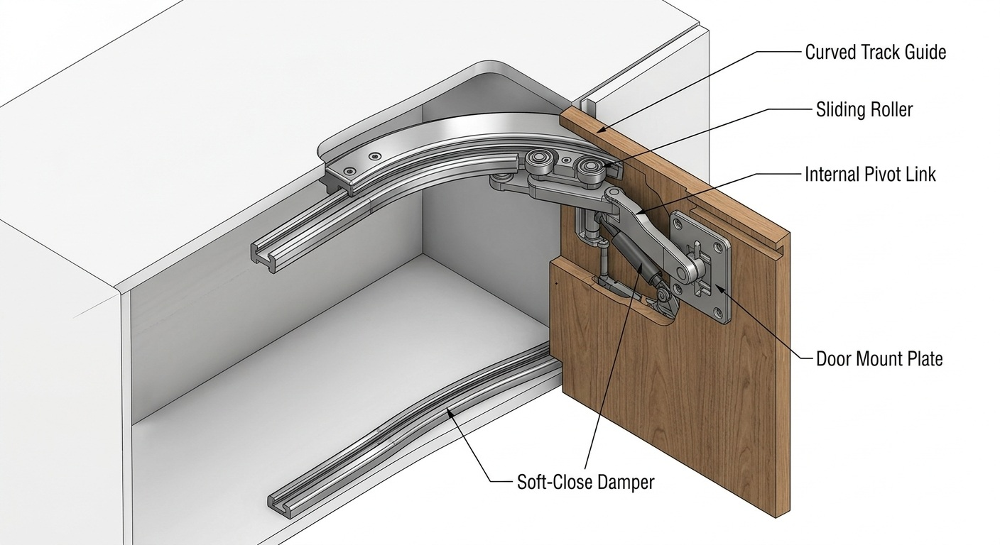

کاتالوگ جامع و تحلیل تکنولوژیک مکانیزم

۱. معرفی و بیان نوآوری طرح
مکانیزم لولای هوشمند همزمان (Bus-Door / Pocket Door) توسعهیافته توسط تیم مهندسی ما، یک راهکار پیشرفته سینماتیکی برای حل چالش محدودیت فضای مانور (Clearance Space) در محیطهای مینیاتوری و طراحیهای مینیمال مدرن است. بر خلاف لولاهای سنتی بازار که صرفاً یک حرکت دورانی ساده ۹۰ یا ۱۸۰ درجه حول یک محور ثابت ایجاد میکنند، این سازه با تلفیق همزمان حرکت انتقالی (خطی) و چرخشی، درب را هنگام باز شدن به درون حجم مردهی کابینت یا کمد هدایت میکند. این فرآیند باعث میشود شعاع مزاحم بازشوی درب کاملاً حذف شده و راهروها یا فضاهای تنگ آشپزخانه همواره آزاد بمانند.
مزیت رقابتی این مکانیزم نسبت به سایرین حل مشکل فضا به همراه همان مقدار طول عمر و البته ظرافت و زیبایی بیشتر این نوع طراحی است.
۲. مبانی فنی و الهامات بینالمللی مکانیزم
طراحی دستاورد فنی این پروژه بر پایه سه رکن اساسی از فناوریهای روز جهان بنا شده است:
- سیستم چهارمیلهای همزمان (Four-Bar Linkage): استفاده از اصول سینماتیک پیشرفته برای هدایت دقیق دربها در امتداد ریل منحنی و تضمین حرکت نرم بدون قفلشدگی مکانیکی.
- پلیمرهای مهندسی پیشرفته (POM): استفاده از چرخها و قطعات غلتکی از جنس پلیمر خودروانکار POM جهت کاهش شدید اصطکاک، حذف کامل نیاز به روغنکاری مداوم و کنترل لرزشهای ناگهانی سیستم.
- توزیع بهینه جرم و طراحی ماژولار: کاهش استفاده از قطعات فولادی سنگین در بخشهای غیرسازهای و جایگزینی آن با آلومینیوم آنودایز شده جهت کاهش گشتاور وارده بر اتصالات دیواره کابینت و افزایش طول عمر کل مکانیزم.
نحوه کار کرد محصول هم به این صورت است که با هل دادن درب به سمت داخل، درب شروع به عقب رفتن و قرار گرفتن در بخش مستطیلی تعبیه شده در بالای کابینت می کند. همزمان با وارد شدن این نیرو بلبرینگ ها روی ریلی که تعبیه شده شروع به حرکت می کنند و لولای بالای دمپر نیز بسته می شود، خود دمپر هم نقش نرم کننده حرکت و کنترل کننده حرکت درب را دارد تا زمانی که درب کاملا بسته شود.(مطابق تصویر)
۳. کاربردهای اصلی سیستم لولای همزمان
- آشپزخانههای مینیاتوری و کمجا: بهینهسازی مسیر حرکت در مطبخها و کابینتهای نزدیک به دیوارهای جانبی و حتی کابینتهای در مجاورت سقفها.
- کمدهای دیواری و کلوزترومهای مدرن: حذف مزاحمت دربهای بزرگ کمد دیواری در اتاقخوابهای کوچک.
- طراحی دکوراسیون پنهان (Hidden Spaces): پنهانسازی ایستگاههای لوازم خانگی (مانند قهوهساز یا مایکروویو) درون کابینت به صورت کاملاً لوکس و یکدست.
۴. چشم انداز و برنامه های آتی
اگرچه دوام و عمر بالای این محصول با توجه به متریال به کار رفته در آن هزینه آن را کاملا توجیح می کند ولی می توان در آینده یا از طریق بهینه سازی در مصالح به کار رفته و یا با هوشمندتر کردن مکانیزم هزینه های تولید را کمتر کرد.
حتی از برنامه های آینده می توان به گسترش کاربرد این نوع لولا در سایر صنایع و سازه ها اشاره کرد. پس گذراندن موفقیت توسط این طرح به راحتی میتوان به تجاری سازی گسترده آن فکر کرد.